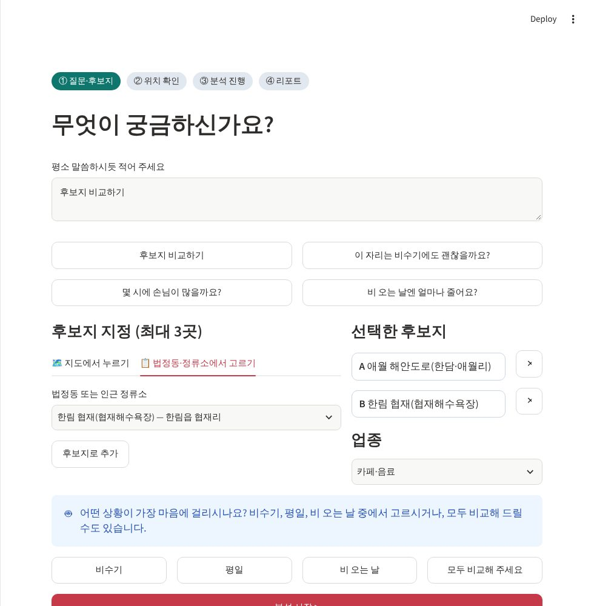
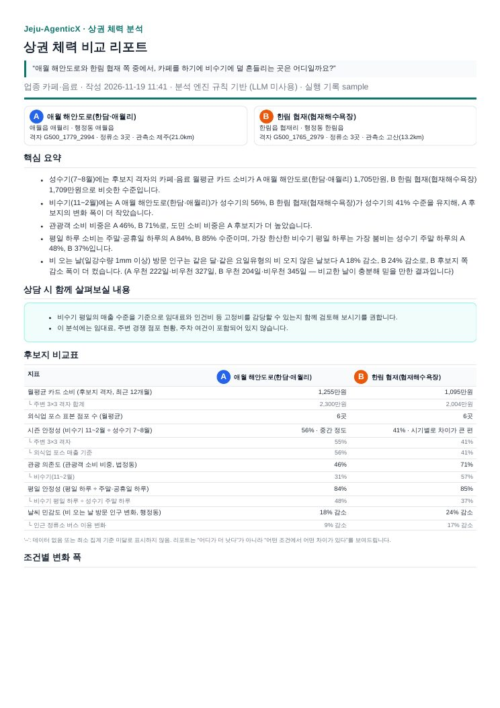
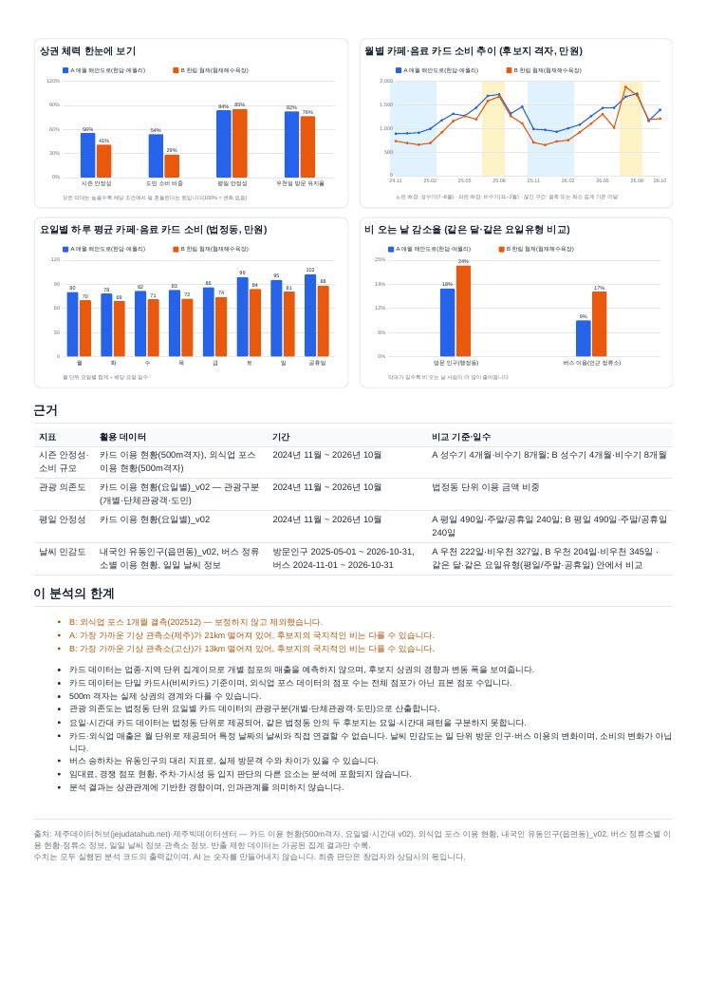

제주에서 창업을 준비하는 도민과 그 곁의 상담사를 위한 상권 체력 분석 AI Agent [데이콘] 제주 AI·빅데이터 활용 AI Agent 개발 챌린지 · 팀 에이전틱스 · 2026년 11월
제주의 창업은 성수기의 풍경을 보고 결정하지만, 비수기의 일상을 견디며 유지됩니다. “이 자리는 비수기 평일에도 버틸 수 있는가”, “궂은 날씨가 이어지면 손님은 얼마나 줄어드는가”에 답할 데이터 (500m 격자 카드 소비, 요일·시간대 카드 소비, 읍면동 유동인구, 정류소별 버스 이용, 일일 날씨)는 이미 공개되어 있지만, 세 가지 장벽 때문에 창업 현장에 닿지 못하고 있습니다.
| 장벽 | 어려움 | 담당 Agent |
|---|---|---|
| 선택의 장벽 | 질문에 어떤 데이터를 어떻게 조합할지 알기 어렵다 | ② Navigator |
| 처리의 장벽 | 주소를 격자·정류소·관측소에 연결하고 결합하려면 코딩·공간정보 역량이 필요하다 | ③ Analyst |
| 해석의 장벽 | 수치를 얻어도 판단으로 잇기 어렵고, 믿을 만한 차이인지 가늠하기 어렵다 | ④ Critic · ⑤ Reporter |
사용자 질문 ─▶ ① Planner ─▶ ② Navigator ─▶ ③ Analyst ─▶ ④ Critic ─(통과)─▶ ⑤ Reporter
(ask_user) ▲ │
└─ 재분석 요청 ─┘ (최대 2회)
| 상권 체력 지표 | 정의 | 데이터(단위) |
|---|---|---|
| 시즌 안정성 | 비수기(11~2월) 월평균 ÷ 성수기(7~8월) 월평균 | 카드(500m격자)·외식업 포스 — 월 |
| 관광 의존도 | 관광객(개별+단체) 소비 비중 | 카드(요일별)_v02 — 법정동·월 |
| 평일 안정성 | 평일 하루 ÷ 주말·공휴일 하루 (요일 일수로 나눈 하루 평균) | 카드(요일별)_v02 — 법정동·월 |
| 날씨 민감도 | 같은 달·같은 요일유형 안에서 우천일 ÷ 비우천일 − 1 (가중평균) | 유동인구(읍면동)_v02, 버스 × 일일 날씨 — 일 |
반출 제한 데이터는 센터 밖에서 확보할 수 없어 명세서와 같은 구조의 예시 데이터로 동작을 검증했습니다. 아래 수치는 실제 상권 실적이 아닙니다.
JEJU_DB_PATH만 바꾸면 센터 PC 에서 실데이터로 같은 흐름이 동작합니다.
시나리오: 카페 창업을 준비하는 도민이 상담사와 함께 “애월 해안도로와 한림 협재 쪽 중에서, 카페를 하기에 비수기에 덜 흔들리는 곳은 어디일까요?”라고 묻고, Agent 의 “어떤 상황이 가장 마음에 걸리시나요?” 질문에 “모두 비교해 주세요”를 고른 경우.

Agent 가 만든 핵심 요약(코드 산출값 그대로):


정답은 Agent 의 분석 템플릿과 별도로 작성한 pandas 구현(eval/build_reference.py)으로 계산했습니다.
| 항목 | 결과 |
|---|---|
| 계획 정확도(후보지·업종·지표) | 20/20 |
| 데이터 선택 정확도 | 20/20 |
| 수치 정확도(±0.001) | 43/43 |
재현성(tools.replay) |
저장 코드 재실행 결과 일치 |
| 단위·통합 테스트 | 17/17 통과 (샌드박스 차단, 수치 불일치 LLM 문장 폐기, 코드 자가 수정 포함) |
유의: 기준 질문은 개발팀이 작성했으므로, 처음 보는 표현의 질문 이해력은 센터 시범 운영에서 실제 질문으로 추가 측정합니다.
runs/ 에 쌓이는 질문·분석 기록으로 센터 데이터 수요와 신규 개방 우선순위 근거 마련| 센터 PC 최소 사양 | 대응 |
|---|---|
| i7-8700 / RAM 32GB | DuckDB 단일 파일(예시 약 10MB), 지표별 분석 1초 내외 |
| GTX 1060 / VRAM 3GB | 로컬 모델 3B·4bit 양자화(Ollama) |
| 설치·실행 | install.bat 1회 → 바탕화면 Jeju-AgenticX 실행 |
| 인터넷 미연결 | 규칙 기반·오프라인 모드, 지도 대신 법정동·정류소 목록 선택 |